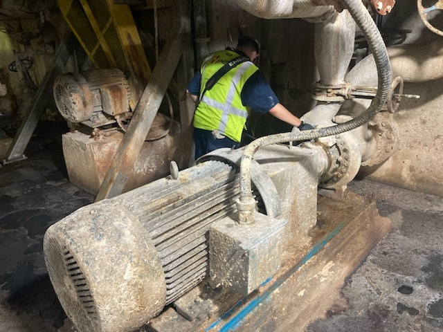

Hello, my name is Tristen Spettel, and I am a junior at Albion College, actively involved in several on-campus organizations, including the Men’s soccer team, Greek life, and percussion in the Albion Symphony Orchestra. I am part of Albion’s 3–2 Applied Physics: Engineering Program, through which I will earn degrees in physics and mechanical engineering, along with a minor in applied mathematics.
Since Albion does not offer a mechanical engineering degree, the program partners with other schools, allowing students to complete their engineering studies after three years at Albion. I chose to pursue mechanical engineering because of my long-standing interest in how machines work and my enjoyment of building from a young age.
During summer, winter, and spring breaks, I work as a Reliability Technician at HECO Inc. in their predictive service group. This role has strengthened my communication skills with customers, on-site workers, and management—an essential skill set for working as a contractor and collaborating with new teams daily.
